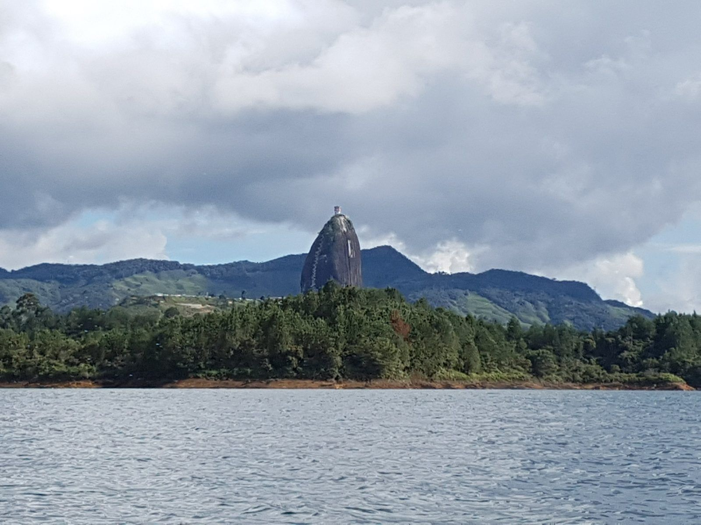

Colombia · Antioquia · Guatapé
Guatapé and the Rock in 2026: what to check before you go, and what the trip was like
I went to Guatapé, a lake town east of Medellín, on December 8, 2017, and stayed three days: the view from the top of the Rock, a tandem paraglider flight in Cocorná and a boat tour on the reservoir. That was nine years ago, so this is partly what I remember and photographed, and partly what I checked again in November 2026. The checked facts are marked with a source and a date. I found no official page with the fees, so every figure below comes from private travel sites, guides and news articles, and where they disagree I say so.
In short: Guatapé works for a few days, but the distances are long: I rode a scooter a long way to Cocorná for the flight.
What the trip was like
My first photos in Guatapé are from the late afternoon of December 8, taken from a height over the reservoir. The viewpoint, the stone steps and a statue of the Virgin with a sign that forbids climbing on her pedestal fit the top of La Piedra del Peñol, the granite rock above the lake. I did not write it down, and I have no photo of the climb or the ticket.

On December 9 I rented a scooter and rode a long way to Cocorná to fly a tandem paraglider. On the way back a downpour caught me. I do not remember where I rented the scooter, what I paid, the name of the paragliding company or what the flight cost.
On December 10 I walked down to the pier without a plan and boarded a boat with about ten other people. I do not remember the company or what I paid. From the water the Rock looks like a tall dark granite wall with a flag on top.

The guide on the boat showed us a burned-out two-storey house on a lawn above the water and presented it as Pablo Escobar's. I did not check that then, and I have no other source from that day.

What to check before you go (November 2026)
- The bus from Medellín. The colombiamove.com guide (updated November 17, 2026) says a bus leaves from the Terminal del Norte at about 15,000 pesos each way, takes about 2 hours, with the first bus around 5:30 and the last one back around 19:00. It says to get to the terminal by the Metro to Acevedo station and then a short taxi ride or a 10-minute walk, and that the bus stops in the El Peñol municipality first, and the town of Guatapé is about 4 km further, a motorbike taxi costing about 5,000 pesos. An article by Colombia.com, published on July 15, 2026, says buses leave about every hour and cost 20,000 to 25,000 pesos per person (colombia.com). The two figures do not agree, so ask at the terminal.
- The Rock: fee. They disagree. The guide from colombiamove.com (updated November 17, 2026) gives 35,000 pesos for foreigners and 25,000 for Colombians, with 740 steps. Colombia.com (July 15, 2026) gives 35,000 pesos per person with no difference, and about 700 steps. An article by Semana from July 2024 gives 25,000 pesos (semana.com).
- The Rock: hours and the climb. Colombia.com says it is open from 8:00 to 17:00 every day, including holidays. The colombiamove.com guide says the climb takes 15 to 30 minutes, that at 8:00 you can move freely, that on weekends by 10:00 the stairs are a slow shuffle, and that you should avoid Sunday afternoons, Semana Santa and holiday weekends. It says to bring water, because it costs more at the top, and to wear proper shoes.
- Boat tours. The colombiamove.com guide puts shared boats at 20,000 to 35,000 pesos per person, for a loop of 45 to 90 minutes with 8 to 15 people, leaving from the waterfront throughout the day, and private speedboats at about 100,000 to 150,000 pesos per hour. One operator lists a two-hour tour with a stop at the cross of the old, submerged town of Peñol, a pass by the La Manuela farm, which it describes as Pablo Escobar's, and a photo stop at the Rock, with no price shown (tur.com).
- Paragliding. A Semana article published on August 16, 2024 puts a flight in Guatapé at 200,000 to 260,000 pesos, about 15 minutes in the air, depending on the provider and what is included (semana.com). A booking page for Cocorná, with no update date, lists a tandem flight from US$80.22, about 15 to 20 minutes in the air and a minimum age of 12 (civitatis.com). I flew in Cocorná, not in Guatapé, and the two figures are far apart, so ask what is included.
- Budget and safety. The colombiamove.com guide gives roughly 120,000 to 180,000 pesos for a day trip, dorms at 60,000 to 80,000 pesos a night and private rooms at 120,000 to 200,000. It says the main risk is pickpocketing on crowded days, so keep your phone in your pocket.
What I could not check
I found no official page for the Rock's fee or hours, so I cannot tell you which of the fees above is right. I did not verify that the burned house is Pablo Escobar's: the guide on my boat said so, one operator describes the La Manuela farm as his, and the main guide I used does not mention it. I found no current price for the hostel I stayed in, Happy Buddha, which I could reach only by jeep, and I do not know which paragliding company I flew with.
What I would pass on
I took photos, not notes, so I cannot give you my own tips. The practical points that the sources agree on are these: go early, bring cash, and ask at the terminal and at the ticket booth for the current prices.
The full chapter, with all of the photos, the hostel, the scooter ride and the days around it, is a free sample in Members.